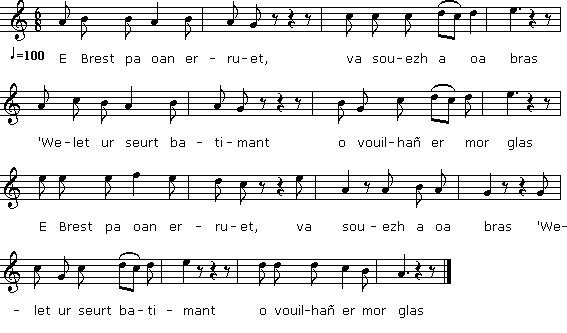

Ar Martolod yaouank
Le jeune matelot
Chant à rapprocher du "Mal du Pays" du "Barzhaz Breizh"
Texte et musique recueillis par Alfred Bourgeois à Châteaulin,
Chants recueillis dans la deuxième moitié du XIXème siècle
Publiés à Paris, en 1939, dans le recueil "Kanaouennoù Pobl"

Mélodie (Mode hypophrigien)
Arrangement Christian Souchon (c) 2012
Source: le site de M.Quentel, "Son ha ton" (voir "Liens")
|
BREZHONEK AR MARTOLOD YAOUANK (6.1) E Brest pa oan erruet, va souezh a oa bras (6.2) 'Welet ur seurt batimant o vouilhañ er mor glas (8.3) Bez e oa ur vatimant liesoc'h a-benn gordenn (8.4) Evit a neudenn gevnid en-dro d'ur bod raden (m.1) Va gwele oa en ur sac'h, ne oa tomm na klouar (m.2) E oa staget deus ar sol a-bouez pevar amar (i.3) Rochedou gwalc'het er mor, morse ne vent bervet (i.3) Rochedou gwalc'het er mor, morse ne vent bervet A. Ma oufe Marivonig ar boan hag ar vizer Neuze d'ar vartoloded pa eont er-maez e kêr B. M'em boa 'n em bro ur vestrez, he anv Marivon Oa o wriat rochedoù 'vit an Aotrou 'r Baron. C. P'oa gwriet ar rochedoù e vont pakatet kloz Me a yei d'o c'has d'ar gêr, da zek eur deus an noz... Kanet gant Laorens PENNEC e Kastellin |
TRADUCTION FRANCAISE LE JEUNE MATELOT (6.1) A Brest lorsque j'arrive, ah! quel étonnement (6.2) Quand je vois dans la rade l'énorme bâtiment. (8.3) Il est chargé de cordes, bien plus enchevêtrées (8.4) Qu'au buisson de fougère les toiles d'araignée. (m.1) Mon lit, un sac de toile est suspendu, glacé, (m.2) Au bout de quatre amarres aux poutres du plancher. (l.3) Pour laver les chemises: l'eau de mer, non bouillie A. Si Maryvonne avait prévu les avanies, A. Si Maryvonne, hélas, avait su les tracas Qu'un matelot endure, en ville lorsqu'il va! B. Car j'avais une belle, Maryvonne est son nom Qui cousait les chemises de Monsieur le Baron. C. Une fois emballées, je me mets en devoir De les porter chez lui, vers dix heures du soir... Traduction: Christian Souchon (c) 2012 NOTE: les N° de couplet entre parenthèses sont ceux du chant "Droughirnezh" du Barzhaz et de "Martoloz yaouank" du cahier de Keransquer |
ENGLISH TRANSLATION THE YOUNG SAILOR (6.1) On arriving in Brest I found astonishing (6.2) To see, wobbling on the water, such a huge thing (8.3) With around each mast, more cables and ropes (8.4) Than are threads in a spider's web on a fern plant. (m1) My bed: a bag that's neither warm nor soft. (m.2) It's fastened with rope shreds to the beams of the loft. (l.3) To wash your shirts: sea water, never boiled they are. A. If Maryvonne had kown in what trouble she was getting me! A. If she had known into what trouble she was getting me When she sent me downtown! B. For I had a sweetheart. Maryvonne was her name. She sewed shirts for the lord baron. C. Once they were packed I went downtown to deliver them at ten in the evening NOTE: The stanzas have the same numbers as in the song "Droughirnezh" in the Barzhaz and in "Martoloz yaouank" in the Keransquer copybook. |
Retour à "Droug-hirnezh"
Taolenn